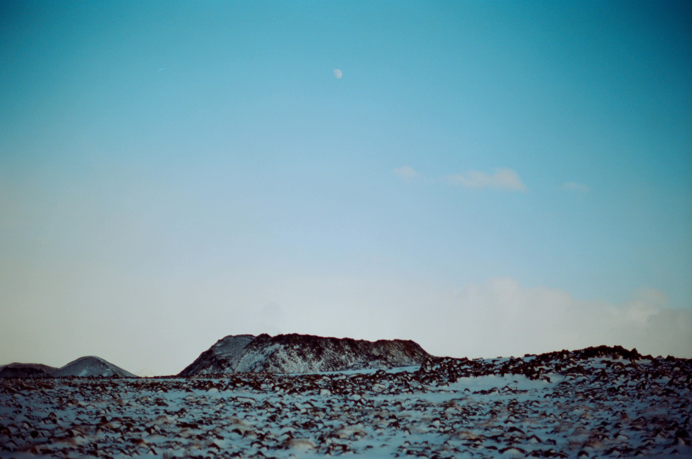

First hike of the trip. We set off for Stein, which means stone in Icelandic. The hike is near Grundarhverfi, Iceland - about a 45 minute drive from Reykjavik. I don't know the name of the mountain in the photo, but it is part of a large volcanic plateau, which Stein is also a part of.Looking back towards Reykjavik, probably from the same spot that the last picture was taken. In the background you can see the city, as well as a pocket of falling rain.Near the turn around point for the hike, the big rock in this picture is Stein.Second hike of the trip, this time further away from the city. This hike was at the Sundhnukusgigar Lava Fields and Geldingadalir Volcano - near Grindavik, Iceland. These lava fields were created in 2021, 2022, and 2023 when the volcano erupted for the first time in hundreds of years. This picture was taken at the start of the hike, near the trailhead.Some sort of highway barrier with poles sticking out of it. I don't know why this is out here, but my guess is that it was used to block off the area during the eruptions. I like that people have decided to cover the poles in stickers for hiking shops and breweries.A look out across the snow-covered lava fields - towards the edge of the peninsula.The hike gets steeper here. The snow is powdery and easy to walk on, a stark contrast to later in the hike where the deeper snow gives way to large patches of ice. Microspikes made this hike (and the hike up Stein) significantly easier.A look back towards the trailhead, which is around the side of the mountain to the left. At the bottom of this hill you can barely make out the barrier with the poles sticking out from earlier.These yellow lights are placed every few hundred feet along the trail as you get closer to the volcano. They are to help people stick to the trail during low visibility conditions.A trail marker.The snow is all piled up on the same side of each rock. Probably from the wind.

The volcano itself... or at least the biggest vent. There are a number of volcanic vents around this area. This one was smoking from the top when we saw it, although it is very hard to see in this picture - you can just barely make out some smoke on the left side. This was near the place where we turned around, it was about 4.5 miles from the trailhead to this point.This picture was taken on the way back to the trailhead. Behind the mountains the ocean is visible. On the right side you can see a snowstorm moving in.The rest of the pictures on this page are all from the same day. This is the day where we drove around the Golden Circle (a circular road network in Iceland) and visited a number of different sites. This is a frozen waterfall in Þingvellir National Park, located in a rift valley between two continental plates. There exist a number of viking ruins here, but they were mostly buried beneath the snow when we were there.Also located in Þingvellir National Park, this shows the large rock walls on one side of the rift valley.This is Silfra in Þingvellir National Park. You can snorkel on the top of the water here and see down hundreds of feet into the huge fissures between the tectonic plates.Gulfoss Waterfall, just an extra 10 minute drive from the main Golden Circle road. The scale of this frozen waterfall is huge and hard to capture on camera. On the left of the image is an observation deck, helping to give some sense of the size.Another perspective of Gulfoss, taken from the observation deck in the first photo.Some rocks. Taken at Gulfoss Waterfall but turned around to look at the boring side. For some reason I thought this shot was going to be really good because of the mountains you can barely see in the background. I wasted like 6 of my exposures to try and capture this.Joey in front of Gulfoss Waterfall looking angry.Joey in front of Gulfoss Waterfall looking happy.Me in front of Gulfoss Waterfall looking happy. Photo credit to Joey.Taken from the rim of Kerið, a dormant volcano that you can climb down into. This is looking towards the rim on the other side, where some other hikers are visible.I wonder how this selfie turned out.Joey looking happy in front of KeriðA sign telling people not to walk on the frozen lake in the center of the volcanic crater feat. people walking on the frozen lake. I also walked on it.